NCERT Solutions Class 9 Science Chapter 6 Tissues – Here are all the NCERT solutions for Class 9 Science Chapter 6. This solution contains questions, answers, images, step by step explanations of the complete Chapter 6 titled Tissues of Science taught in class 9. If you are a student of class 9 who is using NCERT Textbook to study Science, then you must come across Chapter 6 Tissues. After you have studied lesson, you must be looking for answers of its questions. Here you can get complete NCERT Solutions for Class 9 Science Chapter 6 Tissues in one place. For a better understanding of this chapter, you should also see Chapter 6 Tissues Class 9 notes , Science.
NCERT Solutions For Class 9 Science Chapter 6 Tissues
Topics and Sub Topics in Class 9 Science Chapter 6 Tissues:
- Tissues
- Are Plants and Animals Made of Same Types of Tissues?
- Plant Tissues
- Animal Tissues
These solutions are part of NCERT Solutions for Class 9 Science. Here we have given Class 9 NCERT Science Textbook Solutions for Chapter 6 Tissues.
IN-TEXT QUESTIONS SOLVED
NCERT Textbook for Class 9 Science – Page 69
Question 1. What is a tissue?
Answer: A group of cells that are similar in structure and work together to do a peculiar function is called tissue.
More Resources for CBSE Class 9
- NCERT Solutions
- NCERT Solutions Class 9 Maths
- NCERT Solutions Class 9 Social Science
- NCERT Solutions Class 9 English
- NCERT Solutions Class 9 Hindi
- NCERT Solutions Class 9 Sanskrit
- NCERT Solutions Class 9 IT
- RD Sharma Class 9 Solutions
Question 2. What is the utility of tissues in multicellular organisms?
Answer: Tissues provide structural strength, mechanical strength, show division of labour.
Formulae Handbook for Class 9 Maths and ScienceEducational Loans in India
Class 9 Science NCERT Textbook – Page 74
Question 1. Name types of simple tissues.
Answer: The types of simple tissues are parenchyma, collenchyma, sclerenchyma and aerenchyma.
Question 2. Where is apical meristem found?
Answer: Apical meristem is found at the tip of root or shoot of the plant.
Question 3. Which tissue makes up the husk of coconut?
Answer: The husk of coconut is made of sclerenchymatous tissue.
Question 4. What are the constituents of phloem?
Answer: Phloem is made up of four types of elements sieve tube, companion cells, phloem fibres and phloem parenchyma.
Class 9 Science NCERT Textbook – Page 78
Question 1. Name the tissue responsible for movement in our body.
Answer: 1. Muscular tissue, 2. Nervous tissue, combination of both the tissues are responsible for movement in our body.
Question 2. What does a neuron look like?
Answer: A neuron consists of a cell body with a nucleus and cytoplasm, from which long thin hair like parts arise. Each neuron has a single long part called the axon, and many small, short branched parts called dendrite. An individual nerve cell is called neuron, it may be up to a metre long.

Question 3. Give three features of cardiac muscles.
Answer: Feature of cardiac muscles
(1) Heart muscles (cardiac muscles) are cylindrical, branched and uninucleated
(2) They are striated muscle fibres.
(3) They are involuntary muscles, cannot be controlled by us.
Question 4. What are the Junctions of areolar tissue?
Answer: Areolar tissue are connective tissues found in animal. It is found between skin and muscles, around blood vessels and nerves and in the bone marrow.
It fills the space inside the organs, supports internal organs and helps in the repair of tissues.
Questions From NCERT Textbook for Class 9 Science
Question 1. Define the term “tissue”.
Answer: Group of cells that are similar in structure and perform same function is called a tissue.
Question 2. How many types of elements together make up the xylem tissue? Name them.
Answer: The xylem is made up of vessels, trachieds, xylem fibres and xylem parenchyma.
Question 3. How are simple tissues different from complex tissues in plants?
Answer: Simple tissues are made up of one type of cells which coordinate to perform a common function.
Complex tissues are made up of more than one type of cells. All these coordinate to perform a common function.
Question 4. Differentiate between parenchyma, collenchyma and sclerenchyma on the basis of their cell wall.
Answer: Parenchyma: The cells have thin cell walls made up of cellulose. Collenchyma: The cells have cell walls thickened at the comers due to pectin deposition.
Sclerenchyma: Their walls are thickened due to lignin deposition.
Question 5. What are the functions of stomata?
Answer: The outermost layer of the cell is called epidermis and is very porous. These pores are called stomata. These stomata help in transpiration and exchange of gases.
Question 6. Diagrammatically show the difference between the three types of muscle fibres.
Answer: Striated muscles
(1) They are connected to bones (Skeletal muscles).
(2) They are voluntary muscles.
(3) The cells are long, cylindrical with many nucleus and are unbranched.
Smooth muscles
(1) They are found in alimentary canal and lungs.
(2) They are involuntary muscles.
(3) They are spindle in shape and have single nucleus.
Cardiac muscles
(1) They are found in heart.
(2) They are involuntary in action.
(3) They are branched and have one nucleus.
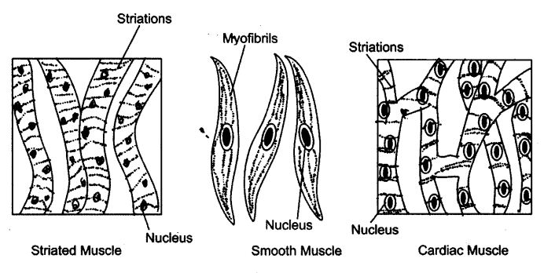
Question 7. What is the specific function of the cardiac muscle?
Answer: (1) Cardiac muscles cells are cylindrical, branched and uninucleated.
(2) They are involuntary muscles.
(3) They show rhythmically contraction and relaxation throughout life.
(4) Their rhythmic contraction and relaxation helps in pumping action of heart.
Question 8. Differentiate between striated, unstriated and cardiac muscles on the basis of their structure and location in the body.
Answer:
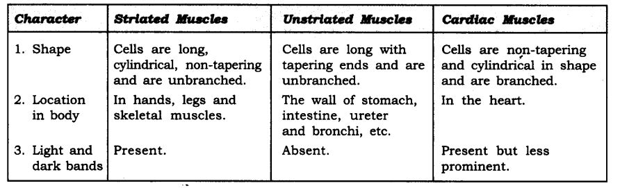
Question 9. Draw a labelled diagram of neuron.
Answer:
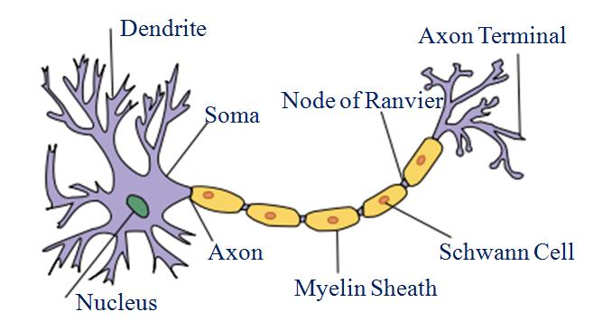
Question 10. Name the following:
(1) Tissue that forms the inner lining of our mouth.
(2) Tissue that connect muscle to bone in humans.
(3) Tissue that trar-carts food in plants.
(4) Tissue that siwea j’ut in our body.
(5) Connective tissue with a fluid matrix.
(6) Tissue present in the brain.
Answer: (1) Squamous epithelium (2) Tendons
(3) Phloem (4) Areolar tissue
(5) Blood (6) Nervous tissue
Question 11. Identify the type of tissue in the following: Skin, bark of tree, bone, lining of kidney tubule, vascular bundle.
Answer: (a) Skin—Striated squamous epithelium
(b) Bark of tree—Cork, protective tissue
(c) Bone—Connective tissue
(d) Lining of kidney tubule—Cuboidal epithelium tisse
(e) Vascular bundle—Conducting tissue
Question 12. Name the regions in which parenchyma tissue is present.
Answer: In the pith of the roots and stems. When it contains chlorophyll, it is called chlorenchyma, found in green leaves. In aquatic plants, parenchyma contains large air cavities and help them to float. Such type of parenchyma is called aerenchyma.
Question 13. What is the role of epidermis in plants?
Answer: Cells of epidermis forms a continuous layer without intercellular spaces. It protects all the parts of plants.
Question 14. How does the cork act as a protective tissue?
Answer: Cork acts as a protective tissue because its cells are dead and compactly arranged without intercellular spaces. They have deposition of suberin on the walls that make them impervious to gases and water.
Question 15. Complete the table:

Answer:

NCERT Solutions for Class 9 Science Chapter 6 Tissues (Hindi Medium)
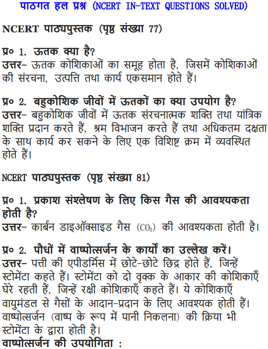
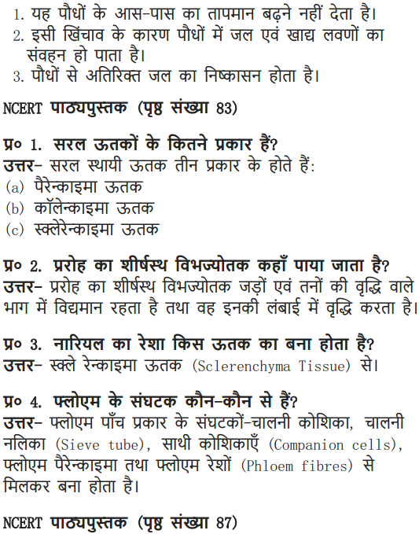
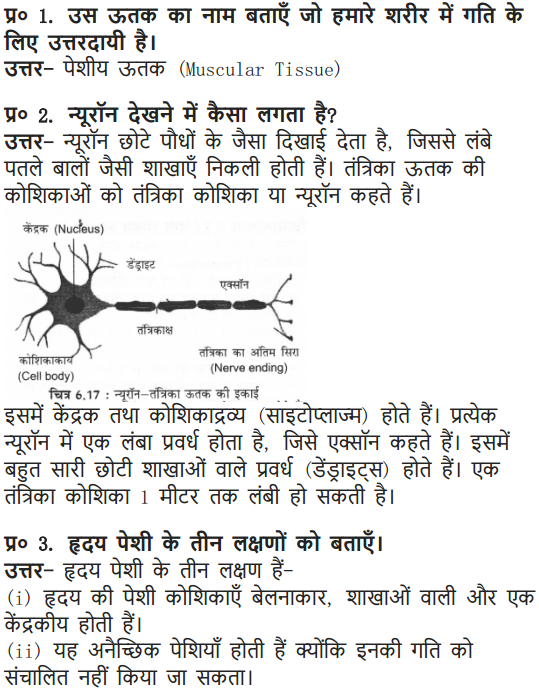
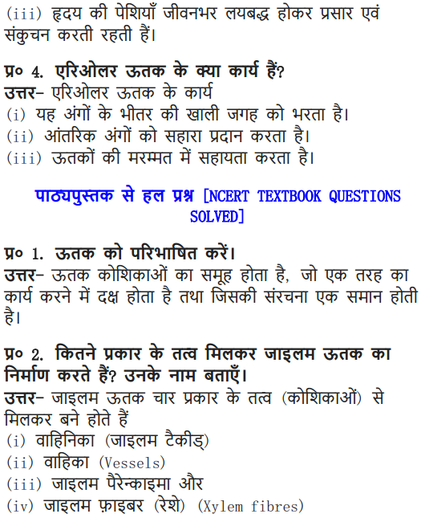
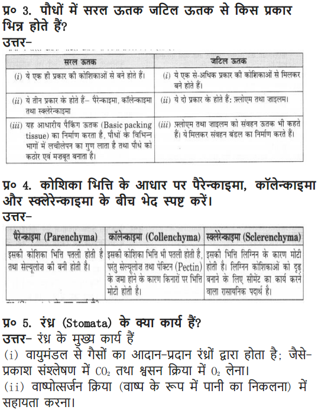
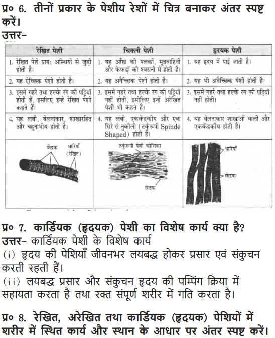
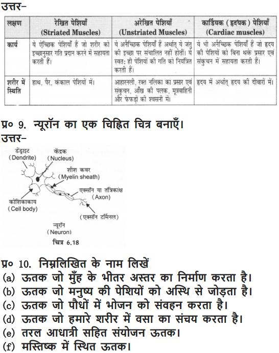
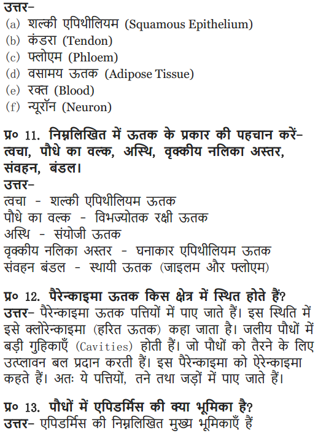
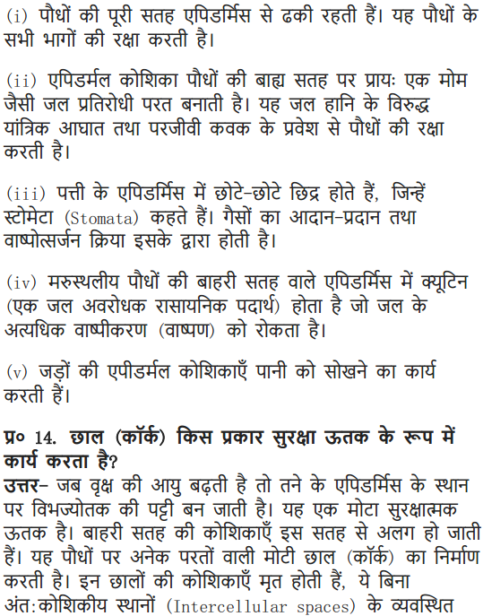
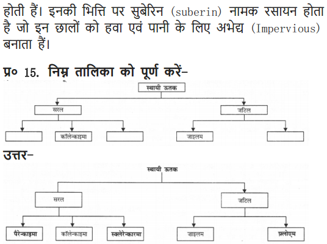
MORE QUESTIONS SOLVED
NCERT Solutions for Class 9 Science Chapter 6 Multiple Choice Questions
Choose the correct option:
1. The cells of cork are dead and have a chemical in their walls that makes them impervious to gases and water. The chemical is
(a) lignin (b) suberin
(c) cutin (d) wax
2. The flexibility in plants is due to a tissue called,
(a) chlorenchyma (b) parenchyma
(c) sclerenchyma (d) collenchyma
3. The tissue present in the lining of kidney tubules and ducts of salivary glands is
(a) squamous epithelium tissue (b) glandular epithelium tissue
(4 cuboidal epithelium tissue (d) columnar epithelium tissue
4. The connective tissue that connects muscle to bone is called
(a) ligament (b) tendon
(d) cartilage (d) areolar
5. The tissue that helps in the movement of our body are
(a) muscular tissue (b) skeletal tissue
(c) nervous tissue (d) all of the above
6. Monocyte, basophil, eosinophil and neutrophil are the examples of different types of
(a) red blood cells (b) white blood cells
(c) areolar tissue (d) compact bone
7. The spindle shaped cells, uninucleated and unbranched are present in muscular tissue of
(a) striated muscles (b) smooth muscles
(c) cardiac muscle (d) both (a) and (b)
8. Sieve tubes and companion cells are present in
(a) xylem (b) phloem
(c) cork (d) cambium
9. The size of the stem increases in the width due to
(a) apical meristem (b) intercalary meristem
(c) primary meristem (d) lateral meristem
10. Blood and lymph are types of
(a) muscular tissue (b) epithelial tissue
(c) connective tissue (d) permanent tissue
11. Cartilage and bone are types of
(a) muscular tissue (b) connective tissue
(c) meristematic tissue (d) epithelial tissue
12. Xylem and phloem are examples of
(a) epidermal tissue (b) simple tissue
(c) protective tissue (d) complex tissue
13. A tissue whose cells are capable of dividing and re-dividing is called
(a) complex tissue (b) connective tissue
(c) protective tissue (d) meristematic tissue
14. The tissue that helps in the secretion and absorption and is found in the inner lining of the alimentary canal is
(a) ciliated epithelium (b) cuboidal epithelium
(c) squamous epithelium (d) columnar epithelium
Answer: 1—(b), 2—(d), 3—(c), 4—(b), 5—(d), 6—(b), 7—(b), 8—(b), 9—(d), 10—(c),11—(b), 12—(d), 13—(d), 14—(d).
NCERT Solutions for Class 9 Science Chapter 6 Very Short Answer Type Questions
Question 1. Name the tissues responsible for the movement of the body.
Answer: Muscle tissue and nervous tissue
Question 2. How does neuron look like?
Answer: A neuron is the unit cell of nervous tissue. It is a thread-like structure with cell body and axon.
Question 3. Name the types of simple tissues.
Answer: (a) Parenchyma (b) Collenchyma (c) Sclerenchyma
Question 4. Name the types of complex tissues.
Answer: Xylem and phloem.
Question 5. Where is apical meristem found? .
Answer: It is present at the growing tips of stem and root, it increases the length of the stem and roots.
Question 6. Which tissue make up the husk of coconut?
Answer: Sclerenchyma.
Question 7. What are the constituents of phloem?
Answer: Phloem constitutes the sieve tubes, companion cell, phloem parenchyma and phloem fibres.
Question 8. Define aerenchyma.
Answer: When the cells have air-filled large cavities of parenchyma, it is called aerenchyma. Aerenchyma helps aquatic plants in floating.
Question 9. What is the utility of tissues in multicellular organisms?
Answer: It helps in growth, organisation of different organs and performing functions.
Question 10. Name the two types of tissues.
Answer: Plant tissues and animal tissues.
Question 11. Name the two types of plant tissue.
Answer: Meristematic tissue and permanent tissue.
Question 12. What is differentiation?
Answer: The process of taking up a permanent shape, size and function by cells is called differentiation.
Question 13. Name the three types of meristematic tissues.
Answer: The three types are:
(a) Apical tissue—tips of root and shoot
(b) Lateral tissue—sides of stem
(c) Intercalary tissue—at nodes
Question 14. Where is apical tissue found?
Answer: Present at the tips of roots and stems.
Question 15. Tissues present at the lateral surface of the stem are called apical tissues. Put (T) if true and put (F) if false.
Rewrite the answer if (F).
Answer: (F). Tissues present at the lateral surface of the stem are called lateral tissue.
Question 16. Which tissues are present at the nodes of the plants?
Answer: Intercalary tissue.
Question 17. What are the various types of blood cells?
Answer: There are three types:
(a) RBC’s
(b) WBC’s and
(c) Platelets.
Question 18. What are tracheids?
Answer: They are elongated cells with tapering ends.
Question 19. What are guard cells?
Answer: Each stomata is bounded by a pair of specialised kidney-shaped epidermal cells called guard cells.
Question 20. Epithelial tissue is the simplest tissue. Write (F) for false or (T) for true.
Answer: (T).
Question 21. What are the functions of cuboidal epithelium?
Answer: It helps in absorption, excretion, secretion, it also provides mechanical support.
NCERT Solutions for Class 9 Science Chapter 6 Short Answer Type Questions
Question 1. Give four differences between bone and cartilage.
Answer:

Question 2. Give the functions of bone.
Answer: The functions of bone are:
(i) It provides shape to the body.
(ii) It provides skeletal support to the body.
(iii) It anchors the muscles.
(iv) It protects the vital body organs like brain, lungs, etc.
Question 3. Give the functions of cartilage. .
Answer: (i) It provides support and flexibility to the body parts.
(ii) It smoothens surface at joints.
Question 4. Fill in the blanks:
(i) Water and minerals are conducted by ………………….
(ii) In higher plants food is conducted by ……………………..
(iii) Blood is a ……………. tissue.
(iv) Bone consists of………….cells.
(v) Cartilage consists of………………..cells.
(vi) Fibres are absent in………….type of connective tissue.
Answer: (i) Xylem (ii) Phloem
(iii) Connective (iv) Osteocyte
(v) Chondrocyte (vi) Blood
Question 5. What are the functions of areolar tissue?
Answer: Functions are:
(i) It helps in repair of tissues after an injury.
(ii) It also helps in combating foreign toxins.
(iii) It fixes skin to underlying muscles.
Question 6. Give difference between xylem and phloem.
Answer:

Question 7. What are fibres?
Answer: Fibres consist of very long, narrow and thick cells. Example, jute fibre.
Question 8. Name the tissues for the following:
(a) Stores fat in animal body.
(b) Divides and re-divides to grow in plants.
(c) Tissue that joins hone to hone.
(d) Covers the external surface of animal body.
Answer: (a) Adipose tissue
(b) Meristematic tissue .
(c) Ligament
(d) Epithelial tissue.
Question 9. What is stomata?
Answer: Stomata are small pores present on the surface of a leaf which helps in the exchange of gases and in transpiration.
Question 10. Why does epidermal tissue have no intercellular space?
Answer: The epidermal (layer) tissue forms a protective outer covering for the plants and it protects the internal parts of the plant. It aid in the protection against loss of water, mechanical injury and invasion by parasitic fungi.
For this protective role to play the continuation of cells is necessary, hence it does not have intercellular space.
Question 11. Name and give the function of each cell of xylem:.
Answer: Xylem consists of tracheids, vessels, xylem parenchyma and xylem fibres.
Tracheids and vessels—Allows the transport of water and minerals.
Xylem parenchyma—Stores food and helps in the sideways conduction of water.
Xylem fibres—Are supportive in function.
Question 12. What is the function and location of stratified squamous epithelium?
Answer: Stratified squamous epithelium is present in the skin. The layers of cells are arranged to prevent wear and tear.
Question 13. Give difference between ligament and tendon.
Answer:

Question 14. Give difference between striated muscles and unstriated muscles.
Answer:

Question 15. State the difference between bone and blood.
Answer:

Question 16. Name all different types of tissues present in animal.
Answer: There are four main types of tissues present in animal. ‘
(a) Epithelial tissue present on the outer and inner lining of the body.
(b) Muscular tissue are made up of muscles, help in movement.
(c) Connective tissue connects the different organs in the body.
(d) Nervous tissue consists of nerve cells and are present in the nervous system.
Question 17. Why is blood called connective tissue?
Answer: The blood is composed of cells and plasma. Plasma is a fluid and cells like red blood cells, white blood cells and platelets are present in it. All these cells are connected due to plasma. It also transports food, water to different parts of the body and connects them.
Question 18. Name three types of muscle tissues and give function of each.
Answer: Three types of muscle tissues are:
(a) Striated muscle (b) Smooth muscle (c) Cardiac muscle
(a) Striated muscle: These muscles show alternate light and dark bands or striations. They are involuntary and present in skeletal tissues,, help in movement of body and bones.
(b) Smooth muscle: These are involuntary muscles, control the movement of food in alimentary canal, contraction and relaxation of blood vessels. Present in iris, uterus etc.
(c) Cardiac muscle: These muscles are present in heart, help in the rhythmic contraction and relaxation throughout the life.
Question 19. State the difference between simple tissues of plants.
Answer: The simple tissues of plants are:
(i) Parenchyma (v) Collenchyma (iii) Sclerenchyma

Question 20. With the help of diagram show the difference between striated muscle fibre, smooth muscle fibre and cardiac muscle fibre.
Answer:


Question 21. Name different types of meristematic tissue and draw diagram to show their location.
Answer: The 3 different types of meristematic tissue are:
(a) Apical meristem—Function: growth in length.
(b) Lateral meristem—Function: growth in thickness.
(c) Intercalary meristem—Function: growth in intemodes.
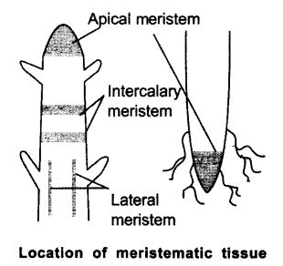
Question 22. Explain the structure, function and location of nervous tissue.
Answer: Structure: Nervous tissue consists of cells called nerve cells joined end to end (neurons). A neuron (nerve cell) consists of a cell body with nucleus and cytoplasm. From these cell body a long thin hair-like parts arise called axon and many short branched parts called dendrites.
Location: Nervous tissue are present in brain, spinal cord and nerves. Function: Nervous tissue receives the stimuli and transmit the stimulus rapidly from one place to another within the body. The nerve impulse allows us to move our muscles and respond to any stimuli.
Question 23. Give the flow chart of plant tissues.
Answer:

NCERT Solutions for Class 9 Science Chapter 6 Long Answer Type Questions
Question 1. Write a note on plant tissues.
Answer: Plant tissues consist of two main types of tissue.

Parenchyma: Present in soft parts of the plant.
Collenchyma: Provides mechanical support to plant present in stalks. Sclerenchyma: They provide strength and flexibility to the plants.
Xylem: Conduct water in plants from root to shoot. Consists of tracheids, vessels, xylem parenchyma and xylem fibres.
Phloem: Conduct food to all parts of plant. Consist of sieve tubes, companion cell, phloem parenchyma and phloem fibres.
Question 2. Show the types of animal tissues using flow chart.
Answer:
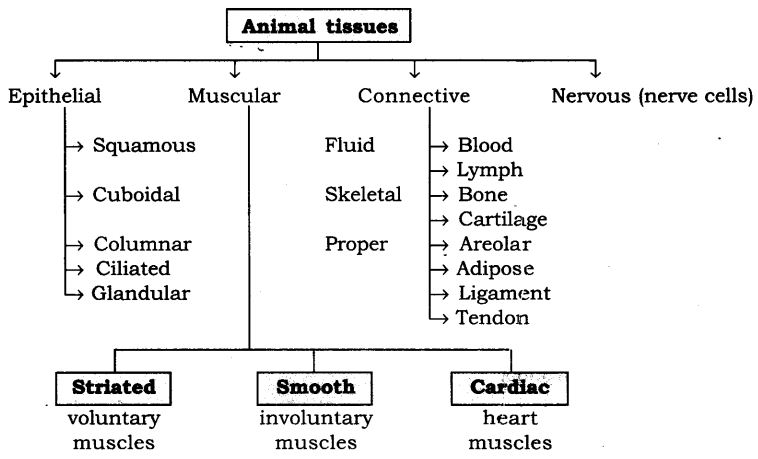
Question 3. What is connective tissue? Explain its types.
Answer: The connective tissue consists of different types of cells, all of them perform same function.

Areolar connective tissue: It is found between the skin and muscles, around blood vessels and nerves and in the bone marrow.
Areolar tissue fills the space inside the organs. It supports internal organs and helps in repair of tissues.
Adipose tissue: Adipose tissue stores fat, found below the skin and between internal organs. The cells of this tissue are filled with fat globules. It acts as insulator due to fat storage.
Blood: It has a fluid called plasma, in plasma are present red blood cells, white blood cells and platelets. Blood flows all over the body and helps in the transport of gases, digested food, hormones and waste material to different parts of the body.
Lymph: Lymph carries digested fat and lot of white blood cells in the plasma. Bone: It forms the framework that supports the body. It supports the different parts of our body. It is strong and non-flexible tissue.
Cartilage: It is present in nose, ear, trachea and larynx. It smoothens bone surfaces at joints.
Tendon: It connects bone and muscles. These tissues are fibrous, flexible and with lot of strength.
Ligament: It connects bone to ‘bone. It is elastic, has lot of strength.
Question 4.Describe ‘epidermis’ in plants.
Answer: Epidermis forms the entire outermost layer of the plant. It is made up of single cell layer. It protects all the internal parts of the plant.
On aerial parts, epidermis secretes waxy, water-resistant layer on their outer surface. This helps in protection against loss of water, mechanical injury and invasion of parasitic fungi.
In leaves, epidermis consists of small pores called stomata. These pores helps in the transpiration and exchange of gases, like oxygen and carbon dioxide for plants.
In roots, epidermis have long hair-like parts that provide greater surface for water absorption.
In desert plants, epidermis has a thick waxy coating of cutin which acts as a water proofing agent.
Question 5. Explain the “complex tissue” of plants.
Answer: Complex tissues are made up of more than one type of cells. All these cells co-ordinate to perform common function. These are—xylem and phloem. Both are conducting tissues and form a vascular bundle.
Xylem consists of—tracheids, vessels, xylem parenchyma and xylem fibres. Most of these cells are dead. Tracheids and vessels helps in water transportation, parenchyma stores food and helps in the sideways conduction of water and fibres are mainly supportive in function.
Phloem is made up of four types of elements—sieve tubes, companion cells, phloem fibres and phloem parenchyma. It helps in the transportation of food in both the directions, i.e. from leaves to roots and to other parts of the plant.
NCERT Solutions for Class 9 Science Chapter 6 Activity-Based Questions
Question 1. • Take two glass jars and fill them with water.
• Now, take two onion bulbs and place one on each jar, as shown in the figure given below.

• Observe the growth of roots in both the bulbs for a few days.
• Measure the length of roots on day 1, 2 and 3.
• On day 4, cut the root tips of the onion bulb in jar 2 by about 1cm. After this, observe the growth of roots in both the jars and measure their lengths each day for five more days and record the observations in tables, like the table
From the above observations, answer the following questions:
(a) Which of the two onions has longer roots? Why?
(b) Do the roots continue growing even after we have removed their tips?
(c) Why would tips stop growing in jar 2 after we cut them?
Answer: (a) The onion in jar 1 has longer roots, as the growth of roots continues in it due to intact root tips.
(b) The roots did not continue to grow in jar 2 after cutting down their tips.
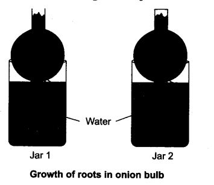
(c) The tips of root stopped growing in jar 2 because the tips of these roots were cut down and the tissues which helps in the growth of roots i.e., meristematic tissues are removed from it.
Question 2. • Take a plant stem and with the help of your teacher cut into very thin slices or sections.
• Now, stain the slices with safranin. Place one neatly cut section on a slide, and put a drop of glycerine.
• Cover with a cover-slip and observe under a microscope. Observe the various types of cells and their arrangement.
• Answer the following on the basis of your observations:
(a) Are all cells similar in structure?
(b) How many types of cells can be seen?
(c) Can we think of reasons why there would be so many types of cells?

Answer:
(a) No, all cells are not similar in structure, we see variety of cells with different shape and size.
(b) We can see at least ten different types of cells in the slide. .
(c) Yes, there are variety of cells so that each group of cell does a specific role in the overall growth of plant.
Question 3. • Take a freshly plucked leaf of Rheo.
• Stretch and break it by applying pressure.
• While breaking it, keep it stretched gently so that some peel or skin projects out from the cut.
• Remove this peel and put it in a petridish filled with water.
• Add a few drops of safranin.
• Wait for a couple of minutes and then transfer it onto a slide. Gently place a cover slip over it.
Answer: (a) The slide shows epidermal cells with stomatal pores as shown in Fig. (a).
(b) On focusing stomata pores under microscope. We can see guard cells and stomata pore as shown in Fig. (b).
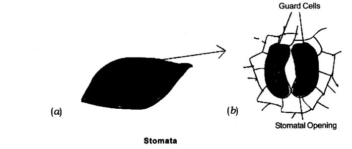
NCERT Solutions for Class 9 Science Chapter 6 Value-Based Questions
Question 1. A group of students completed the project of finding the botanical names of all the trees present in the school campus. They prepared metal plates with names carved on it, to fix it on the plant trunks. Shreya was concerned that if the metal plate is fixed into tree many cells of the tree may get damaged. But the group members explained her that the outer layer of trunk does not have living cells and there won’t be any damage to the tree.
(a) What type of cells are present on the outer layer of the bark/tree trunk?
(b) How does the cprk act as a protective tissue?
(c) What value of the group is seen in the above cast?
Answer: (a) On the outer layer of the tree trunk/bark all thick layer of dead cells is present which acts as protective tissue.
(b) In cork, all cells are dead without intercellular spaces, the walls of the cells have deposition of suberin.
(c) The students in a group show team effort, peer learning and co-operatiye.
Question 2. A paralytic patient was unable to walk. ‘The family member of the patient took the outmost care of the patient.
(a) Name two tissues responsible for the movement of a body.
(b) Name the tissues present in brain and spine.
(c) What value of the family members is seen in the above case?
Answer: (a) The two tissues responsible for movement of the body are muscular tissue and nervous tissue.
(b) The tissues present in brain and spine are nervous tissues.
(c) The family members showed the value of being caring, responsible, dutiful and kind.